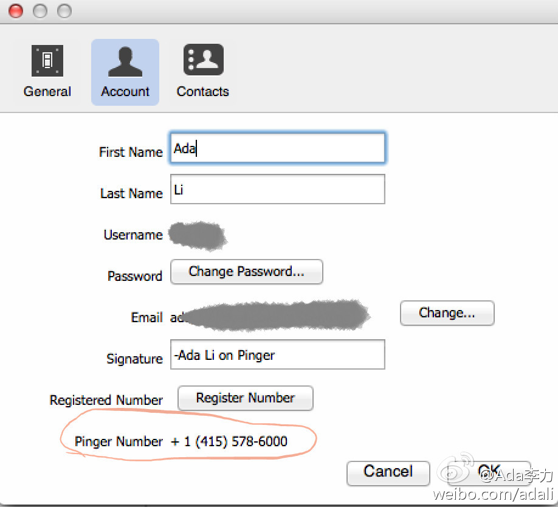

实验了下，这样申请的手机号，Microsoft Azure不认，还是需要美国的亲友帮助把验证号码发回来。不过这个虚拟手机号倒是可以免费往国外手机上发短信。@Ada李力:一些国外的服务是不对大陆用户开放的，比如Windows Azure的200美元初体验。注册需要提供美国手机号做验证。网上查到可以通过网络免费申请，pinger.com/tfw/ ，于是我申请了个靓号： +1 (415) 578-6000 
折腾了大半天，终于看到Azure账号上的200美元了，但也不打算继续在上面搞什么了，访问速度慢得要死，用V-P-N访问也一样慢，放弃！！！就是回头要记得要把信用卡信息取消掉，国外的云服务要在国内推广，信用卡绑定是个大关卡。
阿里有提醒，而且服务很不错的，晚上九点还有电话打来，说初审通过。但遇到ZF的变态规定，什么服务也帮不上忙。//@小雷FansUnion：阿里云备案，出现人名，阿里云方面应该会提示的呀。@Ada李力:只是个人博客站点，备案在经历了将近一个月的等待之后，申请还是被打回了，说是博客名称不允许出现人名，行业等信息。无力吐槽，开始看国外云服务器，比如Amazon，Linode等。
半个多月前手贱点了更新iPhoto, iMovie, Pages等，死活不能完成更新，而且还不能试用这些软件了，提示说正在更新。后来发现得用V-P-N连才行，但很慢很慢，一直没完成更新。今晚突然开窍，把V-P-N服务器由香港改成了美国，下载嗖嗖的，包括2.4G的xcode, 一会儿就弄完了。
上名校能多些选择，但孩子已到这个年龄，再多的反思也无法纠正历史了。我觉得自己跟那个妈妈还有些像呢。[呵呵]//@出版人周筠: 这位妈妈对女儿教育的反思（呵呵，她说其实更像是为自己的辩解），大家怎么看？ @陈忻-儿童心理 @宝玉xp @Ada李力 @讷言敏行的猪 @郝宇晓 @段念_Dennis@出版人周筠:“邻家女孩被哈佛、麻省、斯坦福等一大堆名校录取了，正为要去哪间学校报到愁眉不展。我们虽然庆幸没有这个烦恼，对人家的成就还是羡慕而且嫉妒的” 网页链接
//@jeff_kit: 把dns改用v2ex的就成，不需要vpn@Ada李力:半个多月前手贱点了更新iPhoto, iMovie, Pages等，死活不能完成更新，而且还不能试用这些软件了，提示说正在更新。后来发现得用V-P-N连才行，但很慢很慢，一直没完成更新。今晚突然开窍，把V-P-N服务器由香港改成了美国，下载嗖嗖的，包括2.4G的xcode, 一会儿就弄完了。
06年时是说个人不能申请cn域名吗？//@周金桥: 06年被那帮二货逼得放弃国内空间。//@网路游侠:备案的时候，网站不允许评论。不叫评论还叫什么博客呀。你这用名字居然也不行，工信部一帮二货。/阿里云备案，出现人名，阿里云方面应该会提示的呀。@Ada李力:只是个人博客站点，备案在经历了将近一个月的等待之后，申请还是被打回了，说是博客名称不允许出现人名，行业等信息。无力吐槽，开始看国外云服务器，比如Amazon，Linode等。
Ross Gardler 目前在微软工作，以什么身份和大家做交流呢？ 网页链接@美乐家艾瑶瑶妈妈的快乐生活:apache基金会的Ross Gardler即将来京访问，Ross Gardler会做相关的分享，大概时间是在5月19或20号，目前征集参与人员，有想参与的吗？也请大家帮忙转发。@福柯式精神病 @lee-xh @lazycai @rachelzhang1 @Ada李力 @程显峰-Mars @程开源 @Freeman小屋 @姜宁willem
旧文重温，很怀念那个时代。但人得继续往前走啦。[呵呵]//@爱开源的钟情GNOME: @紫羊子 @Ada李力@Linuxeden开源社区:【Sun Microsystems：太阳是如何陨落的?】 曾经如日中天的Sun Microsystems（太阳微系统公司）因为软件处理不当，在网络泡沫之后一蹶不振，终于以“长江后浪推前浪，前浪死在沙滩上”的惨景黯然?..全文链接→网页链接
在确认用户的真实性上，国内最常用的是短信回复验证码。我见过的两个做法更值得借鉴，一个是语音自动呼叫，让用户接听后，输入听到的验证码；另一个是给用户的住址发明信片，让用户在网站上输入明信片上的验证码。这两种验证方法适用于需要非常可信用户的环境中。
而作为对比，我收到的来自国内的语音自动呼叫，全是广告，最近以外语培训机构，K12培训机构为主。@Ada李力:在确认用户的真实性上，国内最常用的是短信回复验证码。我见过的两个做法更值得借鉴，一个是语音自动呼叫，让用户接听后，输入听到的验证码；另一个是给用户的住址发明信片，让用户在网站上输入明信片上的验证码。这两种验证方法适用于需要非常可信用户的环境中。
体验太差//@handsomegui: 明信片效率太低，不过倒是体现了一些人文关怀。而仅短信或仅语音安全性又不够。推荐组合：特定操作独立密码 + 短信/语音验证码 + Google Authenticator二步验证（每30秒更新）。三者结合起来可以精准确认。@Ada李力:在确认用户的真实性上，国内最常用的是短信回复验证码。我见过的两个做法更值得借鉴，一个是语音自动呼叫，让用户接听后，输入听到的验证码；另一个是给用户的住址发明信片，让用户在网站上输入明信片上的验证码。这两种验证方法适用于需要非常可信用户的环境中。